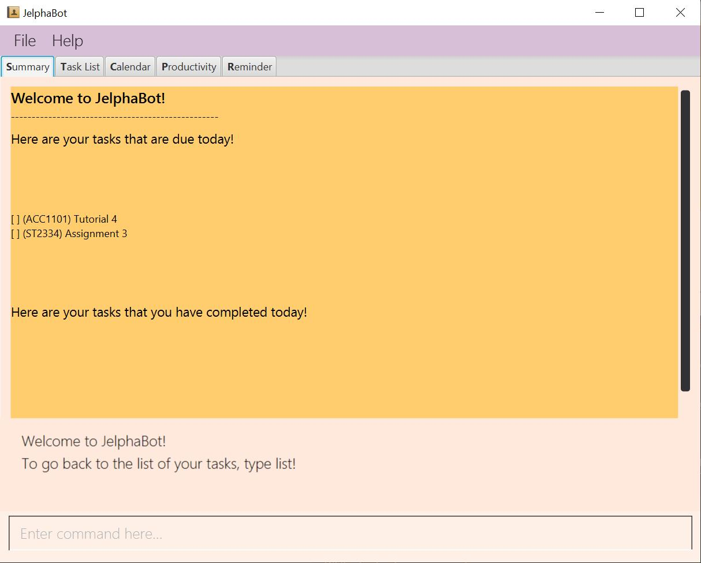

By: Team 2103T-F09-02 Since: Jan 2020 Licence: MIT
- 1. Preface
- 2. Quick Start
- 3. Features
- 3.1. Common commands
- 3.2. Summary (Eden)
- 3.3. Managing Tasks (Yao Jie)
- 3.3.1. Reading the Task List
- 3.3.2. Adding a Task:
add - 3.3.3. Listing all Tasks :
list - 3.3.4. Locating Tasks by name:
find - 3.3.5. Editing a Task :
edit - 3.3.6. Completing a Task :
done - 3.3.7. Deleting a Task :
delete - 3.3.8. Clearing all Tasks :
clear - 3.3.9. Show all
completed Tasks :
show-completed(Eden) - 3.3.10. Show all
incomplete Tasks:
show-incomplete(Eden) - 3.3.11. Pin Important Tasks :
pin[Coming in V2.0] - 3.3.12. Sort Tasks :
sort[Coming in V2.0]
- 3.4. Calendar (Amanda)
- 3.5. Productivity Tracking (Jel)
- 3.6. Set Reminders (Dian Hao)
- 3.7. Colour-coded module codes [Coming in V2.0]
- 4. FAQ
- 5. Command Summary
1. Preface
1.1. Introduction
Welcome to JelphaBot!
If you are just starting out, the quick start section below will help you get JelphaBot started
right
away! It will equip you with the basics so that you can quickly enjoy and master the features
offered.
JelphaBot is a desktop app for managing tasks specially designed by and for NUS students that allows you to recognise important tasks at a glance so that you can prioritise commitments and manage your time.
You can enter commands in JelphaBot through a Command Line Interface (CLI), which means that if you can type quickly, JelphaBot can help you get work done faster than a traditional mouse-controlled Graphical User Interface (GUI), while still retaining the benefits of a beautiful user interface.
Upon running JelphaBot, you will see various components on it’s main display screen. The components of the main screen is labelled below.
The function of each component is as follows:
-
Menu bar: You can access common commands such as
helpandexitby clicking the menu items here. -
Tabs Pane: This is where you can navigate between the different features located in various tabs.
-
Main Panel: This is the main display screen which corresponds to the tab it is under.
-
Results Display: This is where JelphaBot interacts with you by showing you the results of your commands!
-
Command Box: This is where you key in your commands.
As seen from above, JelphaBot has five tabs; Summary, Task List, Calendar, Productivity and Reminder. Each tab provides a specific feature aimed to help you manage your tasks and deadlines more productively!
Interested? Jump to the Section 2, “Quick Start” to get started. Enjoy!
1.2. Using this User Guide
1.2.1. Purpose of this Guide
This User Guide is filled with information to help you set up and make the best out of you very own JelphaBot! You will be able to learn more about the commands that are available for you, together with examples of how they are used. These commands are also consolidated under this section for your convenience.
1.2.2. Notation used in this Guide
To aid in your understanding throughout this User Guide, you may find below the different symbols and formatting used throughout this guide.
Symbol |
What does it mean? |
||
|
|
Command that can be typed into the command box |
||
|
Key |
A Key that you should press on your keyboard |
||
|
|
Tips and tricks that might be useful |
||
|
|
Additional information that is good to know |
||
|
|
Important pointers to take note |
||
Link to another section or website |
2. Quick Start
-
Ensure you have Java
11or above installed in your Computer. -
Download the latest
jelphabot.jarhere. -
Copy the file to the folder you want to use as JelphaBot’s home folder.
This is important because it decides where your information is saved!
Ensure that JelphaBot has write permissions to that folder. -
Double-click the file to start the app. The GUI should appear in a few seconds.
JelphaBot should initialize with a sample list of tasks as shown in the following diagram.Figure 2. Expected result after running JelphaBotThe sample list of tasks helps test if you installed JelphaBot correctly!
If you do not see this, please try deleting JelphaBot and its accompanying files and folders and repeat steps 2 to 4. -
Type a command in the command box and press Enter to execute it.
e.g. typinghelpand pressing Enter will open the help window. -
Some example commands you can try:
-
addd/Assignment 1 dt/10-Mar-2020 23 59 m/CS2103T: adds a task with descriptionAssignment 1to the task list. -
list: lists all tasks. -
delete1: deletes the 1st task shown in the current list. -
exit: exits the app.You can use the UP and DOWN keys to view your last entered commands,
and Ctrl + Tab to nagivate to the next tab quickly!
-
-
Refer to Section 3, “Features” to learn about how each command can help you.
A summarized list of commands is available here.
3. Features
In this section, you can find details about the commands that JelphaBot supports.
These include the function of the command, its format, and example usages.
For easier naviagation, this guide will go through features according to the order of tabs shown on
the User Interface.
3.1. Common commands
3.1.1. Viewing help : help
If you can’t recall the command you need, you can enter the help command
in any panel.
A help window appear with a link to this user guide.
Format: help

help3.1.2. Exiting the program : exit
You can exit the program anytime by entering the exit command directly from any
panel.
Format: exit
3.1.3. Switching between tabs
You can switch between tabs anytime by pressing Ctrl + Tab on your keyboard to move to the next tab on the right. If you are already on the rightmost tab, it wraps around to the leftmost tab. You can also move to tabs directly by using the respective shortcut commands. To make JelphaBot easier to use for experienced users, command shortcuts are provided. Easily remember command shortcuts by checking the bolded letter in the title of every panel!
| Command | Tab switched to |
|---|---|
|
Summary |
|
Task List |
|
Calendar |
|
Productivity |
|
Reminder |
3.2. Summary (Eden)
This tab will be the first panel you see after entering JelphaBot!
This section gives you a minimalistic overview of the day, namely tasks that you have due within the day, and tasks that you have completed within the day! Tasks displayed will only have it’s module code as well as their description for simplicity!
3.2.1. Viewing the summary tab: summary
You can enter the summary command or its shortcuts :S or
:s to manually switch to the summary tab.
The summary panel will then display a summary of your tasks due and completed today.
Format: summary
Shortcut: :S or :s
summaryDisplays the two dropdown tabs that show the tasks that are Due Today, and Completed Today.
Once a task under the Due Today tab is marked as done, it will appear under the Completed Today tab.
3.3. Managing Tasks (Yao Jie)
JelphaBot allows you to track and manage your tasks comprehensively as well!
You can view and sort all your tasks from the Task List page.
You can enter the list command or its shortcuts :T or :t
to instantly switch to the task list tab.
The task list panel will then display all your tasks sorted into various categories.
Format: list
Shortcut: :T or :t
list3.3.1. Reading the Task List
The task list is formatted so that you can distinguish urgent tasks at first glance. The start of every task is labelled with a module code so that you can visually categorize them. Tasks are tagged according to their importance:
-
Default priority
-
High Priority tasks will be bolded to denote important tasks.
-
Low priority tasks will be italicized to denote optional tasks.
The start of every task will be labelled with a module code so that you can visually
categorize them.
Go here to read more about adding tasks with priority and here for editing task priority.
Command Format for Task list commands
-
Parts of the command in
UPPER_CASErepresent command parameters that have to be supplied by you.
e.g. inadd d/DESCRIPTION,DESCRIPTIONrepresents a field where you can provide the appropriate description, such asadd d/Assignment 1. -
Parameters in square brackets are optional e.g
d/DESCRIPTION [p/PRIORITY]can be used asd/Assignment 1 p/0or asd/Assignment 1. -
Parameters with a trailing
…can be used as many times as you want, or can also be omitted.
e.g.[t/TAG]…can be used once ast/project, or multiple times liket/project t/graded, and so on. -
Parameters can be in any order e.g. if the command specifies
d/DESCRIPTION p/PRIORITY,p/PRIORITY d/DESCRIPTIONis also acceptable.
3.3.2. Adding a Task: add
You can add a task to your task list.
Format: add d/DESCRIPTION dt/DATETIME m/MODULE_CODE [p/PRIORITY]
[t/TAG]…
add d/Assignment
1 dt/Jan-01-2020 23 59 m/CS1231 t/graded|
Format of the month in DATETIME (MMM) input has to have the first letter in
upper-case. E.g Mar instead of mar when specifying the month of March.
|
Examples:
-
add d/Assignment 1 dt/Jan-01-2020 23 59 m/CS3230 p/1 -
add d/Project TP dt/Jan-01-2020 23 59 m/CS2103T p/1 t/pair t/work
|
A task can have any number of tags (including 0)! If the priority field is not specified, the default priority used is Normal Priority. |
3.3.3. Listing all Tasks : list
You can list all tasks in your task list. Optional arguments can be added to dictate sorting
order for your tasks.
Format: list [SORTING_ORDER]
Group Tasks by Date : list date
You can group tasks based on their due date.
This is also the default interface for the task list tab.
Format: list date
list
datelist date allows you to group your tasks into the following categories:
-
Pinned [Coming in V2.0]
(Pinned tasks will always be displayed at the top. To read more about pinning tasks, go here) -
Overdue
(Shows tasks which are past their due date) -
Due Today
(Shows tasks not overdue and due by the end of the current day) -
Due This Week
(Shows tasks due within the next seven days) -
Due Sometime
(Shows all other tasks that do not fit into prior categories)
These categories are arranged to make it easier for you to see what is immediately due. By moving tasks that are due soon to the top of the list, you can decide what to focus your time on.
Group Tasks by Module : list module
You can also group your tasks based on their module code.
Format: list module
list
moduleThis grouping allows you to manage your time by tracking the amount of time spent on each module. You can also see which modules are more intensive or have upcoming projects or assignments due.
3.3.4. Locating Tasks by name: find
You can find tasks in your task list with description containing any of the given
keywords.
Format: find KEYWORD [MORE_KEYWORDS]
find
tutorialExamples:
-
find assignment
ReturnsAssignment 1andassignment task -
find Tutorial Project MidTerm
Returns any task having descriptions ofTutorial,Project, orMidTerm
3.3.5. Editing a Task : edit
You can edit an existing task in your task list.
Format:
edit INDEX [d/DESCRIPTION] [dt/DATETIME] [m/MODULE_CODE] [p/PRIORITY (-1, 0, or 1)]
[t/TAG]…

edit 1 m/CS2105
d/Tutorial 2
You can remove all the task’s tags by typing t/ without
specifying any tags after it.
|
Valid command examples for edit:
-
edit 1 m/CS2105 d/Tutorial 2
Edits the moduleCode of the 1st task to becs2105and description toTutorial 2respectively. -
edit 2 dt/Jan-2-2020 23 59 t/
Edits the date and time of the 2nd task to beJan-2-2020 23 59and clears all existing tags.
3.3.6. Completing a Task : done
You can mark a task in your task list as done and the task’s status will be updated in
the display.
Format: done INDEX
done 1
3.3.7. Deleting a Task : delete
You can delete a task from your task list.
Format: delete INDEX

delete 1
Examples:
-
list
delete 2
Deletes the 2nd task in the task list. -
find Betsy
delete 1
Deletes the 1st task in the results of thefindcommand.
3.3.8. Clearing all Tasks : clear
You can clear all tasks from your task list.
Format: clear
clear
3.3.9. Show all completed Tasks : show-completed
(Eden)
You can display all the tasks in your task list that have been completed.

show-completedIf you do not have any tasks that are complete in your tasklist, the displayed list will be empty and a message will be shown telling you that you currently do not have any completed tasks!
show-completed, if the tasklist does not have any completed tasks
3.3.10. Show all incomplete Tasks: show-incomplete
(Eden)
You can display all the tasks in your task list that are currently incomplete.
show-incompleteIf you do not have any tasks that are incomplete in your tasklist, the displayed list will be empty and a message will be shown telling you that you currently do not have any incomplete tasks!
show-incomplete, if the tasklist does not have any incomplete tasks
3.3.11. Pin Important Tasks : pin [Coming in V2.0]
You can pin important tasks to the top of the task list with the pin
command.
Pinned tasks will always be displayed in the Pinned Tasks group in the task list.
Trying to pin a task that is already pinned will unpin it.
3.3.12. Sort Tasks : sort [Coming in V2.0]
You can change how tasks are sorted with the sort command.
Format: sort SORTING_ORDER
Valid SORTING_ORDER values include date, module, and
priority.
3.4. Calendar (Amanda)
JelphaBot also comes with a built-in calendar view that allows you to view your overarching tasks due on a monthly basis. Dates that have tasks due would have a dot indicator shown on the calendar. You would also be able to navigate to specific dates to view your tasks due for that day of the month!
3.4.1. View calender : calendar
Apart from the function to switch tabs by pressing Ctrl + tab on your
keyboard, you can enter the calendar command or its shortcuts :C
or :c to manually switch to the calendar tab.
The calendar panel will then show you your schedule for the current month with today’s
date highlighted.
Format: calendar
Shorcut: :C or :c
calendar
| Highlighting of Dates: Today’s date would be highlighted in dark blue, while other dates would be in light blue. |
3.4.2. Change month and year view of
Calendar : calendar
You can navigate the calendar panel to another month and year by specifying it. The calendar
panel would be updated accordingly
while highlighting the first day of the month.
The task list panel on the left will display the tasks due on the first day of the
month.
Format: calendar MONTHYEAR
Examples:
-
calendar May-2020
calendar
May-2020Displays month of May in the year 2020 in the calendar panel on the right.
|
Format of the month in MONTHYEAR (MMM) input has to have the first letter in
upper-case. E.g Mar instead of mar when specifying the month of March.
|
| Dot indicator showing tasks: Dates that have more than 3 tasks due would have a red dot indicator, while dates with at least 1 task but less than 4 tasks due would be represented with a green dot indicator. |
3.4.3. Show tasks due on specific date : calendar
Displays the tasks due on specified date, while highlighting that day on the calendar
Format: calendar DATE
Examples:
-
calendar Apr-1-2020 -
calendar Apr/1/2020
calendar
Apr-1-2020Highlights 1st of April in the calendar panel on the right and displays the corresponding tasks due on the left.
3.4.4. Navigate directly to today’s
date on Calendar : calendar
Immediately displays the calendar view for this month and highlights today’s date.
The task list panel on the left will display the tasks due today as well.
Format: calendar today
Examples:
-
calendar today
calendar
todayDisplays month of April in the year 2020 in the calendar panel on the right, with today’s date highlighted and displays the corresponding tasks due today on the left.
3.5. Productivity Tracking (Jel)
JelphaBot also comes with a productivity tracking that allows you track the progress of your tasks in that week. You would be able to see the progress bar fill up as you complete more tasks!
3.5.1. Track productivity : productivity
Apart from the function to switch tabs by pressing Ctrl + tab on your
keyboard, you can enter the productivity command
or its shortcuts :P or :p to manually switch to the productivity
tab.
The productivity panel will then show you your productivity for the day.
Format: productivity
Shortcut: :P or :p
productivity
| The progress bar and the text following it only shows tasks that are due on the day JelphaBot is running. |
3.5.2. Starting timer for a task : start
You can start a timer for your task.
Format: start INDEX
start 1
3.5.3. Stopping timer for a task : stop
You can stop a running timer for your task.
Format: stop INDEX
stop 1| Exiting the application before stopping any running timer wil cause all recorded time since the timer was started to be lost. |
3.5.4. Receiving encouragement and criticism
JelphaBot automatically tracks the user’s productivity in a day and outputs the
appropriate response to the user’s
achievements and task completion rate.
There is no need to manually request for compliments or criticism.
3.6. Set Reminders (Dian Hao)
JelphaBot allows you to set reminders for tasks and manage your tasks comprehensively! You can view all your existing reminders from the reminders tab.
3.6.1. View reminders : remindertab
Apart from the function to switch tabs by pressing Ctrl + tab on your
keyboard, you can enter the remindertab command
or its shortcuts :R or :r to manually switch to the reminder tab.
Every Reminder will show the Task `s module code, description, due
date, the days that will be reminded before the
deadline, and the hours that will be reminded before the deadline.
Format: remindertab
Shortcut: :R or :r

remindertab
3.6.2. Adding reminder : reminder
You can add a reminder to your specified task to remind yourself of the task if the current
time is within the time-frame specified
by you.
Format: reminder INDEX days/DAYS hours/HOURS

reminder 1 days/1
hours/13.6.3. Removing reminder : delrem
If you would like for a task’s reminder to be deleted, you can enter the
delrem command to remove the reminder of that task.
Format: delrem INDEX

delrem 1
3.6.4. Reminder popup notification
Every time you run JelphaBot after adding your reminders, JelphaBot will show a list of tasks that will be overdue soon, and tasks that are past their deadline but have not been completed.

3.7. Colour-coded module codes [Coming in V2.0]
Users can customise the font colours of different modules to better distinguish between different tasks. The module codes displayed in the Main Window will be similar to the tags displayed to make it easier for users to view them.
4. FAQ
Q1: Is JelphaBot free?
A: Yes, JelphaBot is completely free to use!
Q2: How do I transfer my data to another Computer?
A: Install the app in the other computer and overwrite the empty data file it
creates with the file that contains the data of your previous JelphaBot folder.
Q3: How do I save my data?
A: JelphaBot automatically saves your data whenever you make a change.
There is no need to save manually.
Q4: Can I add multiple tasks using a command line?
A: Sorry, we currently do not support this feature.
We will consider this in v2.0.
Q5: How do I add tasks with no deadline or description?
A : Sorry, we currently do not support task entries with no deadline or descriptions.
We will consider this in v2.0.
Q6: Do I need an Internet connection to use JelphaBot?
A: No, you don’t. JelphaBot works completely offline.
5. Command Summary
-
Help :
help -
Summary:
summaryor:sor:S -
Add
[d/DESCRIPTION] [dt/DATETIME] [m/MODULE_CODE] [p/PRIORITY] [t/TAG]…
e.g.add d/Project TP dt/Jan-01-2020 23 59 m/CS2103T p/1 t/pair work -
List :
listor:tor:T -
List by Date :
list date -
List by Modules :
list module -
Find :
find KEYWORD [MORE_KEYWORDS]
e.g.find Tutorial Assignment -
Edit :
edit INDEX [d/DESCRIPTION] [dt/DATETIME] [m/MODULE_CODE] [p/PRIORITY] [t/TAG]…
e.g.edit 1 m/CS2105 d/Tutorial 2 -
Done :
done INDEX
e.g.done 1 -
Delete :
delete INDEX
e.g.delete 3 -
Clear :
clear -
Exit :
exit -
Show Completed Tasks:
show-completed -
Show Incomplete Tasks:
show-incomplete -
Add Reminder :
reminder INDEX days/DAYS hours/HOURS
e.g.reminder 2 days/1 hours/1 -
Delete Reminder :
delrem INDEX
e.g.delrem 2 -
View Reminders:
remindertabor:ror:R -
Productivity :
productivityor:por:P -
Timer :
start INDEXorstop INDEX
e.g.start 1orstop 1 -
Calendar :
calendaror:cor:C -
Calendar Date :
calendar DATE
e.g.calendar Jan-1-2020 -
Change Calendar View :
calendar MONTHYEAR
e.g.calendar Apr-2020 -
Today’s Calendar View :
calendar today